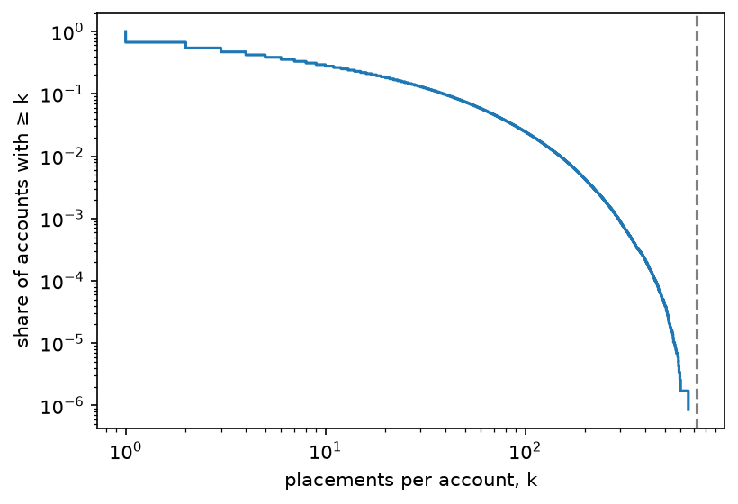
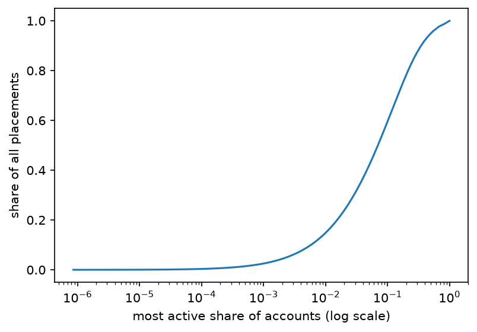
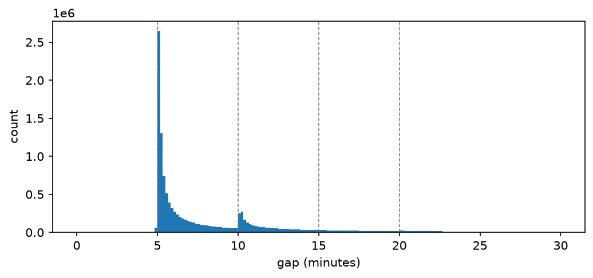
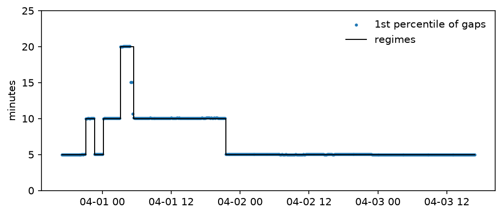
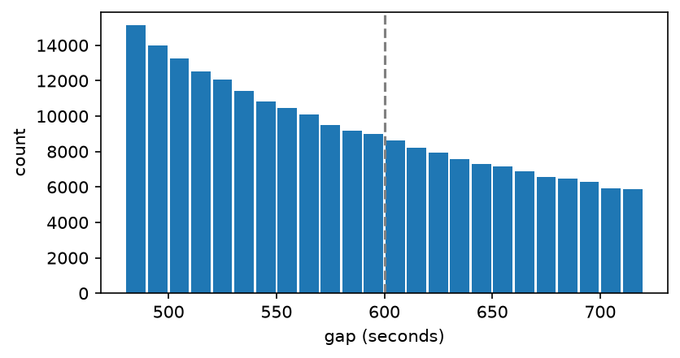
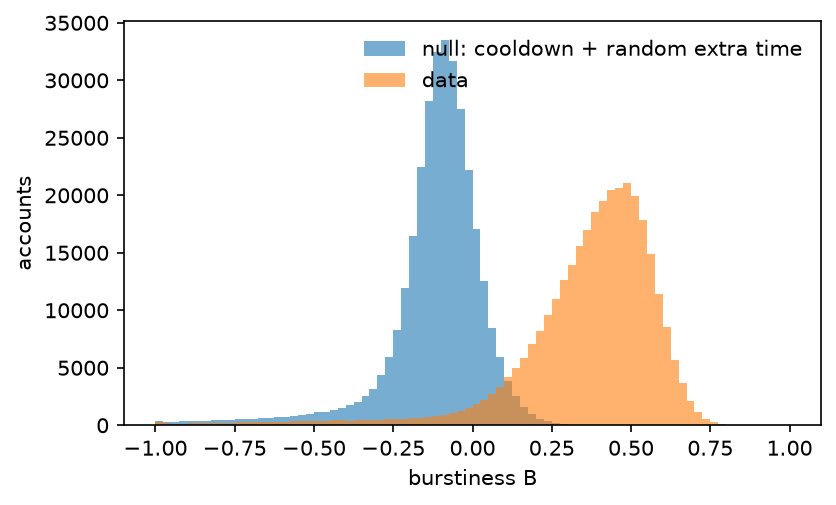
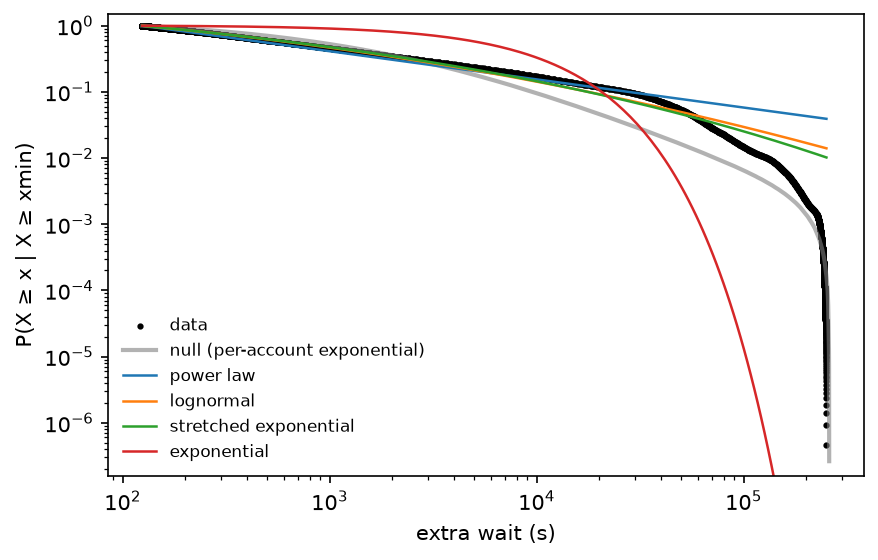
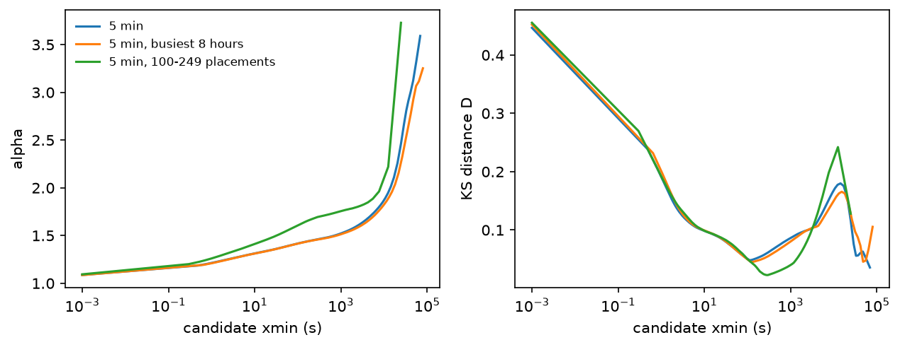

import numpy as np
import polars as pl
import matplotlib.pyplot as plt
import rplace17 as r
d = r.load().filter(pl.col("t_us") >= r.LAUNCH_US) # from the launch hour on (@sec-data)2 Actors
The bottom rung of the ladder is a single account. Before asking how people interact, we ask how they act alone: how much, and with what rhythm. Two ideas from complex systems frame this chapter.
- Heterogeneity. In many human systems a few individuals do much of the activity. If r/place is like that, an “average user” describes almost nobody.
- Burstiness. Human activity tends to come in bursts separated by long silences, not at a steady rate (established; Goh and Barabási 2008, see Appendix B). r/place adds a hard rule: after each pixel you must wait. Does the rule make people regular, or are they still bursty above it?
On the way we find that the rule itself was not fixed.
2.1 How much people place
k = d.group_by("user_id").len()["len"].to_numpy()
print(f"{len(k):,} accounts; mean {k.mean():.1f}, median {np.median(k):.0f}, max {k.max():,} placements")
print(f"placed exactly once: {(k == 1).mean():.1%}; 100 or more: {(k >= 100).mean():.1%}")1,166,794 accounts; mean 14.2, median 3, max 656 placements
placed exactly once: 32.8%; 100 or more: 2.5%The mean is 14.2 but the median is 3: a typical account placed a handful of pixels, while a few placed hundreds. A plot of the whole distribution shows how uneven this is. We plot the share of accounts with at least k placements (the complementary cumulative distribution, or CCDF), on log scales, because it needs no binning choices.
t = d["t_us"].to_numpy()
grid = np.arange(t.min(), t.max(), 1_000_000) # one-second steps from launch to close
ceiling = (1 / r.cooldown_at(grid)).sum() # placements possible with no idle time at all
xs = np.sort(k)
ccdf = 1 - np.arange(len(xs)) / len(xs)
fig, ax = plt.subplots(figsize=(6, 4))
ax.step(xs, ccdf, where="post")
ax.axvline(ceiling, ls="--", color="grey")
ax.set_xscale("log"); ax.set_yscale("log")
ax.set_xlabel("placements per account, k"); ax.set_ylabel("share of accounts with ≥ k")
plt.show()
No account reaches the dashed line at 719 placements, the most anyone could have made by placing the instant the cooldown allowed for the whole event; the busiest made 656. A natural guess is that the spread comes from how long people stayed rather than how fast they placed while there. That is a hypothesis; sessions (below) are the way to test it.
How concentrated is the work? Sort accounts from most to least active, and ask what share of all placements the top accounts made.
desc = np.sort(k)[::-1]
cum = np.cumsum(desc) / desc.sum()
top = np.arange(1, len(desc) + 1) / len(desc)
fig, ax = plt.subplots(figsize=(6, 4))
ax.plot(top, cum)
ax.set_xscale("log")
ax.set_xlabel("most active share of accounts (log scale)"); ax.set_ylabel("share of all placements")
plt.show()
share = lambda f: cum[int(f * len(desc)) - 1]
print(f"top 1% of accounts: {share(0.01):.0%} of placements; top 10%: {share(0.10):.0%}")
top 1% of accounts: 15% of placements; top 10%: 60%The top 1% of accounts made 15% of the placements, and the top 10% made 60%. The work is concentrated, but the cooldown puts a ceiling on it: no account can make more than 0.0043% of all placements. Whether r/place is less concentrated than a comparable system without a rate limit is a comparison we have not made. It would need the same kind of action recorded without a cap: within r/place only the admins had no wait, too few to compare, so it needs another dataset, such as edits in a wiki, measured the same way (Gini coefficient and top shares of accounts active in the same period). The Gini coefficient of placements per account here is computed with the tail fits below.
2.2 The rhythm of one account
The cooldown should leave a fingerprint: no gap between an account’s consecutive placements should be shorter than the wait. Here are all the gaps.
gaps = (d.sort("user_id", "t_us")
.with_columns((pl.col("t_us").diff().over("user_id") / 1e6).alias("gap_s"))
.drop_nulls("gap_s"))
g = gaps["gap_s"].to_numpy()
print(f"{len(g):,} gaps between consecutive placements of the same account")15,392,504 gaps between consecutive placements of the same accountfig, ax = plt.subplots(figsize=(8, 3.2))
ax.hist(g[g < 1800] / 60, bins=np.arange(0, 30.01, 1 / 6))
for m in (5, 10, 15, 20):
ax.axvline(m, ls="--", color="grey", lw=0.8)
ax.set_xlabel("gap (minutes)"); ax.set_ylabel("count")
plt.show()
There is a sharp wall at five minutes, as expected, but also a second wall at ten minutes and smaller ones at fifteen and twenty. Two explanations predict different things:
- The rule changed over time. Then gaps near ten minutes should cluster in particular hours, and five-minute gaps should vanish from those hours.
- Some accounts had a longer wait (new accounts, say). Then ten-minute gaps should cluster in particular accounts, at all hours.
The check is to read the effective wait off the log, minute by minute: the 1st percentile of the gaps that end in each minute. The fastest 1% of placements are people placing the moment they are allowed.
win = (gaps.with_columns(pl.from_epoch("t_us", time_unit="us").dt.truncate("1m").alias("w"))
.group_by("w").agg(pl.col("gap_s").quantile(0.01).alias("q01"), pl.len()).sort("w"))
w_us = win["w"].dt.epoch("us").to_numpy()
fig, ax = plt.subplots(figsize=(8, 3.2))
ax.scatter(win["w"], win["q01"] / 60, s=2, label="1st percentile of gaps, per minute")
ax.step(win["w"], r.cooldown_at(w_us) / 60, where="post", color="black", lw=1, label="regimes")
ax.set_ylabel("minutes"); ax.set_ylim(0, 25); ax.legend(frameon=False, loc="upper right")
plt.show()
The wait was 5 minutes at launch, then changed seven times: up to 10, back to 5, up to 10, up to 20, down to 15, down to 10 (strictly, 10 minutes 3 seconds) and back to 5. Between 2017-04-01 00:10 and 2017-04-01 21:30 UTC no gap was as short as five minutes.
2.2.1 What Reddit’s code says
Reddit released the code that ran r/place, with its commit history. The wait is one constant, PIXEL_COOLDOWN_SECONDS, and the history shows it being changed during the event. Each change appears in the log 2 to 6 minutes after it was committed, the time it took to deploy:
| in force from (UTC, log) | until | seconds | commit (time UTC) |
|---|---|---|---|
| 2017-03-31 17:00 | 2017-03-31 21:10 | 300 | 4680dac |
| 2017-03-31 21:10 | 2017-03-31 22:41 | 600 | f9c6728 Increase cooldown to 10 minutes (21:03:58) |
| 2017-03-31 22:41 | 2017-04-01 00:10 | 300 | 1b78788 Revert ‘Increase cooldown to 10 minutes’ (22:38:01) |
| 2017-04-01 00:10 | 2017-04-01 03:03 | 600 | 75e3a92 Revert ‘Revert …’ (00:05:43) |
| 2017-04-01 03:03 | 2017-04-01 05:00 | 1200 | e8c0e74 Increase cooldown to 20 minutes (02:59:57) |
| 2017-04-01 05:00 | 2017-04-01 05:27 | 900 | ba74693 Decrease cooldown to 15 minutes (04:58:08) |
| 2017-04-01 05:27 | 2017-04-01 21:30 | 603 | 5a85e76 Lower to 10 minutes (05:24:39); c50bb72 Up to 10 minutes 3 seconds (05:25:25) |
| 2017-04-01 21:30 | end | 300 | 0d500f3 Lower cooldown to 5 minutes (21:27:47) |
The same code computes every account’s wait from that single constant; only admins are exempt (their wait is zero, which explains part of the sub-five-minute gaps). There is no branch on email verification or account age. (Source: reddit_place/controllers.py in github.com/reddit-archive/reddit-plugin-place-opensource; the commit times match the log, so the repository tracked what was deployed.)
So the rule changed over time, for everyone. A common account of r/place says something different: the Wikipedia article states that the wait ranged from 5 to 20 minutes depending on whether an account had verified its email address, citing Reddit’s blog post “How We Built r/Place” (13 April 2017), which we have not been able to read. The released code does not support it. The log gives an independent check.
2.2.2 Did some accounts have a longer wait?
The cleanest place to look is inside the five-minute periods, keeping only gaps that start and end there, so the rule in force is not in doubt. If some accounts had a personal ten-minute wait, they should never place faster than every ten minutes there.
gaps = gaps.with_columns(pl.Series("t_prev", gaps["t_us"] - (gaps["gap_s"] * 1e6).cast(pl.Int64)))
gaps = gaps.with_columns(pl.Series("wait_end", r.cooldown_at(gaps["t_us"].to_numpy())),
pl.Series("wait_start", r.cooldown_at(gaps["t_prev"].to_numpy())))
in5 = (gaps.filter((pl.col("wait_end") == 300) & (pl.col("wait_start") == 300))
.group_by("user_id").agg(pl.len().alias("n"), pl.col("gap_s").min().alias("min_gap"), pl.col("gap_s")))
placements = d.group_by("user_id").len()
def coverage(group):
share_pl = placements.join(group.select("user_id"), on="user_id", how="semi")["len"].sum() / d.height
return group.height / len(k), share_pl
heavy = in5.filter(pl.col("n") >= 20)
never10 = int((heavy["min_gap"] >= 595).sum())
cov_acc, cov_pl = coverage(heavy)
print(f"accounts with ≥ 20 gaps inside five-minute periods: {heavy.height:,} "
f"({cov_acc:.0%} of accounts, {cov_pl:.0%} of placements)")
print(f" never faster than 10 minutes: {never10}")
in20 = gaps.filter((pl.col("wait_end") == 1200) & (pl.col("wait_start") == 1200))
under20 = (in20["gap_s"] < 1195).mean()
print(f"gaps inside twenty-minute periods: {in20.height:,}; shorter than 20 minutes: {under20:.2%}")accounts with ≥ 20 gaps inside five-minute periods: 176,615 (15% of accounts, 70% of placements)
never faster than 10 minutes: 24
gaps inside twenty-minute periods: 49,279; shorter than 20 minutes: 0.40%Of the 176,615 accounts with at least 20 such gaps, only 24 never placed faster than every ten minutes. For these accounts a personal ten-minute wait is ruled out. They are 15% of accounts but made 70% of all placements. The same holds in the other direction: inside the twenty-minute period only 0.4% of gaps are shorter than twenty minutes, so no group of accounts kept a shorter wait there either.
Lighter accounts are harder to test: with few gaps, an account can miss every five-minute chance by accident. So we ask how many light accounts (5 to 19 gaps) would never go faster than ten minutes by chance if everyone shared the five-minute rule. We estimate that chance from random stretches of the same length taken from the heavy accounts.
light = in5.filter(pl.col("n").is_between(5, 19))
heavy_gaps = heavy["gap_s"].to_list()
rng = np.random.default_rng(0)
p_by_chance = {}
for n in range(5, 20): # chance that n consecutive gaps of a heavy account all exceed 10 min
hits = 0
for _ in range(40_000):
g_acc = heavy_gaps[rng.integers(len(heavy_gaps))]
start = rng.integers(0, len(g_acc) - n + 1)
hits += min(g_acc[start:start + n]) >= 595
p_by_chance[n] = hits / 40_000
observed = int((light["min_gap"] >= 595).sum())
expected = sum(p_by_chance[n] for n in light["n"].to_list())
cov_acc_l, cov_pl_l = coverage(light)
print(f"light accounts: {light.height:,} ({cov_acc_l:.0%} of accounts, {cov_pl_l:.0%} of placements)")
print(f" never faster than 10 minutes: observed {observed:,}, expected by chance {expected:,.0f}")light accounts: 214,755 (18% of accounts, 18% of placements)
never faster than 10 minutes: observed 8,064, expected by chance 1,809There are 4.5 times more light accounts that never went faster than ten minutes than chance predicts. But the prediction borrows the rhythm of heavy accounts, who place the moment they can, so a light account that is merely slower would also exceed it. The two readings differ in one place. A group of accounts with a ten-minute floor that placed eagerly would pile up just after 10:00, so the pooled gaps of light accounts would jump at 600 seconds. Accounts free to place after five minutes give a density that falls smoothly through it.
x = light.explode("gap_s")["gap_s"].to_numpy()
h, edges = np.histogram(x, bins=np.arange(480, 721, 10))
fig, ax = plt.subplots(figsize=(6, 3))
ax.bar(edges[:-1] + 5, h, width=9)
ax.axvline(600, ls="--", color="grey")
ax.set_xlabel("gap (seconds)"); ax.set_ylabel("count")
plt.show()
The density falls smoothly through ten minutes. So:
- Heavy accounts (70% of placements): the wait followed the shared schedule. A personal ten-minute wait is ruled out by the log, as well as by the code.
- Light accounts: no sign of a group that placed promptly against a ten-minute wait. A slow account with a ten-minute wait cannot be told apart from a slow account with a five-minute one in the log alone; here the code is the evidence that there was no such rule.
- Accounts with fewer than 5 gaps are not tested by the log at all.
The regimes are stored in the package as rplace17.COOLDOWN_REGIMES, with rplace17.cooldown_at(t) giving the wait in force at any time. Why did Reddit change the wait? The commits do not say. A write-up of a Reddit engineering talk lists cooldown timers as one of the knobs the team adjusted while handling server load (secondary source, not yet checked here). If so, the switches followed load, and load follows activity.
This matters beyond bookkeeping. A rule that changed mid-event, for everyone at once, is a natural experiment: the same people, the same canvas, a different speed limit. It is the “cooldown as a control parameter” idea in a clean form (speculative but testable). But the switches were probably not random: if they tracked load, a comparison of whole periods would mix the effect of the rule with the effect of whatever drove the load. Chapter 3 therefore compares short windows on either side of each switch, after checking for trends before it.
2.3 Regular or bursty?
A gap distribution mixes people. To ask whether each person is regular or bursty, we use the burstiness coefficient \(B = (\sigma - \mu) / (\sigma + \mu)\), where \(\mu\) and \(\sigma\) are the mean and standard deviation of one person’s gaps (Goh and Barabási 2008). \(B = -1\) is a perfectly regular clock, \(B = 0\) is a Poisson process, and \(B \to 1\) is extremely bursty.
The cooldown changes what “random” should mean. Someone who placed at random times subject to the rule would have gaps equal to the wait in force plus a random extra time. So our null model keeps each account’s own gaps’ waits (the cooldown in force when each gap ended) and its own mean gap, and replaces the extra time with an exponential draw. If real accounts are burstier than that, the burstiness is theirs, not the rule’s.
gaps = gaps.with_columns(pl.col("wait_end").alias("wait_s")) # the cooldown in force when each gap ended
acc = (gaps.group_by("user_id")
.agg(pl.col("gap_s"), pl.col("wait_s"))
.filter(pl.col("gap_s").list.len() >= 10)) # at least 10 gaps, so B is not pure noise
def burstiness(x):
mu, sd = x.mean(), x.std(ddof=1)
return (sd - mu) / (sd + mu)
rng = np.random.default_rng(0)
B, B_null = [], []
for gs, ws in zip(acc["gap_s"].to_list(), acc["wait_s"].to_list()):
gs, ws = np.asarray(gs), np.asarray(ws)
extra = max(gs.mean() - ws.mean(), 1e-9) # mean time beyond the wait
B.append(burstiness(gs))
B_null.append(burstiness(ws + rng.exponential(extra, size=len(gs))))
B, B_null = np.array(B), np.array(B_null)
print(f"{len(B):,} accounts with ≥ 10 gaps; median B: data {np.median(B):.2f}, null {np.median(B_null):.2f}")324,330 accounts with ≥ 10 gaps; median B: data 0.41, null -0.09fig, ax = plt.subplots(figsize=(6, 3.5))
bins = np.linspace(-1, 1, 81)
ax.hist(B_null, bins=bins, alpha=0.6, label="null: cooldown + random extra time")
ax.hist(B, bins=bins, alpha=0.6, label="data")
ax.set_xlabel("burstiness B"); ax.set_ylabel("accounts"); ax.legend(frameon=False)
plt.show()
print(f"share of accounts burstier than their own null draw: {(B > B_null).mean():.0%}")
share of accounts burstier than their own null draw: 99%Real accounts are far burstier than random extra time above the cooldown would make them (median 0.41 against -0.09; 99% of accounts are burstier than their own null draw).
2.3.1 Two checks on that comparison
This null has two weaknesses.
- The crowd’s daily rhythm. The null draws extra time at a constant rate. But the whole population was more active at some hours than others, and surged at launch. An account that simply followed the crowd’s rhythm would look bursty against a constant-rate null.
- Short histories. \(B\) measured from few gaps is biased. Our null uses each account’s own number of gaps, so both sides share the bias, but it is worth seeing the comparison separately for short and long histories.
For the first, a second null draws the extra time from a process whose rate follows the number of accounts active in each 10-minute window. Each account’s rate is scaled so its mean gap matches the data. For the second, we split accounts by number of gaps.
t_end_s = d["t_us"].max() / 1e6
active = (d.with_columns((pl.col("t_us") // 600_000_000).alias("w"))
.group_by("w").agg(pl.col("user_id").n_unique().alias("accounts")).sort("w"))
sec0 = r.LAUNCH_US // 1_000_000
secs = np.arange(sec0, int(t_end_s) + 7 * 86_400) # padded past the end, so draws can run over
rate = np.interp(secs, active["w"].to_numpy() * 600 + 300, active["accounts"].to_numpy().astype(float))
rate /= rate[: int(t_end_s) - sec0].mean() # mean 1 over the event
Lam = np.concatenate([[0.0], np.cumsum(rate)]) # cumulative rate: Lam[i] at sec0 + i seconds
acc2 = (gaps.group_by("user_id")
.agg(pl.col("gap_s"), pl.col("wait_s"),
(pl.col("t_prev").min() / 1e6).alias("t_first"), (pl.col("t_us").max() / 1e6).alias("t_last"))
.filter(pl.col("gap_s").list.len() >= 10))
n_g = acc2["gap_s"].list.len().to_numpy()
mean_extra = np.array([max(np.mean(g) - np.mean(w), 1.0) for g, w in zip(acc2["gap_s"].to_list(), acc2["wait_s"].to_list())])
i0 = (acc2["t_first"].to_numpy() - sec0).astype(int)
i1 = np.maximum((acc2["t_last"].to_numpy() - sec0).astype(int), i0 + 1)
scale = 1 / (mean_extra * (Lam[i1] - Lam[i0]) / (i1 - i0)) # so the mean extra time matches, given the activity seen
t = acc2["t_first"].to_numpy().astype(float)
sim = [] # (account, gap) pairs, one step at a time
for j in range(n_g.max()):
live = np.nonzero(n_g > j)[0]
after_wait = t[live] + r.cooldown_at((t[live] * 1e6).astype(np.int64))
L = np.interp(after_wait - sec0, np.arange(len(Lam)), Lam) + rng.exponential(1.0, len(live)) / scale[live]
t_next = sec0 + np.interp(L, Lam, np.arange(len(Lam)))
sim.append(pl.DataFrame({"a": live, "gap": t_next - t[live]}))
t[live] = t_next
sim = pl.concat(sim).group_by("a").agg(pl.col("gap").mean().alias("mu"), pl.col("gap").std().alias("sd")).sort("a")
B_act = ((sim["sd"] - sim["mu"]) / (sim["sd"] + sim["mu"])).to_numpy()
B2 = np.array([burstiness(np.asarray(g)) for g in acc2["gap_s"].to_list()])
match = sim["mu"].to_numpy() / np.array([np.mean(g) for g in acc2["gap_s"].to_list()])
print(f"null mean gap / observed mean gap: median {np.median(match):.2f} (IQR {np.quantile(match, .25):.2f}-{np.quantile(match, .75):.2f})")
BANDS = ((11, 20), (20, 50), (50, 100), (100, 250), (250, None)) # placements per account (= gaps + 1)
def band_name(lo, hi):
return f"{lo}+" if hi is None else f"{lo}-{hi - 1}"
rows = []
for lo, hi in BANDS:
m = (n_g + 1 >= lo) & (n_g + 1 < (hi or 10**9))
rows.append({"placements": band_name(lo, hi), "accounts": int(m.sum()),
"median B, data": round(float(np.median(B2[m])), 2),
"median B, activity null": round(float(np.median(B_act[m])), 2),
"data > null": f"{(B2[m] > B_act[m]).mean():.0%}"})
r.table(pl.DataFrame(rows))null mean gap / observed mean gap: median 1.00 (IQR 0.91-1.09)| placements | accounts | median B, data | median B, activity null | data > null |
|---|---|---|---|---|
| 11-19 | 106014 | 0.29 | -0.07 | 96% |
| 20-49 | 130401 | 0.4 | -0.04 | 99% |
| 50-99 | 58799 | 0.49 | -0.05 | 100% |
| 100-249 | 26839 | 0.54 | -0.1 | 100% |
| 250+ | 2277 | 0.56 | -0.24 | 100% |
The activity-following null matches each account’s mean gap (median ratio 1.00), and it barely moves: its median \(B\) is -0.06, against 0.41 in the data. The data are burstier in every band of history length, and more so for longer histories. The crowd’s rhythm is far too gentle to explain the silences of individuals.
2.3.2 Is each account as bursty as the crowd?
Both nulls so far ask whether accounts are burstier than random waiting. A different question is whether each account is burstier than the crowd. A third null answers it. Each account keeps its number of placements and its start time, and each of its gaps is redrawn as the cooldown in force plus an extra wait drawn from everyone’s extra waits at the same cooldown and the same hour of day. This null carries the crowd’s own burstiness, its daily cycle and the launch surge, so it tests “this account waits like everybody does”, not “this account waits at random”. We draw 20 null histories per account, for accounts with at least 20 placements.
g2 = gaps.with_columns(((pl.col("t_prev") // 3_600_000_000) % 24).alias("hour"),
(pl.col("gap_s") - pl.col("wait_end")).alias("extra"))
pools = {key: grp["extra"].to_numpy() # extra waits, by (cooldown, hour of day)
for key, grp in g2.filter(pl.col("wait_start") == pl.col("wait_end")).group_by(["wait_end", "hour"])}
acc3 = (gaps.group_by("user_id")
.agg(pl.len().alias("n"), pl.col("t_prev").min().alias("t0"),
pl.col("gap_s").mean().alias("mu"), pl.col("gap_s").std().alias("sd"))
.filter(pl.col("n") + 1 >= 20))
B3 = ((acc3["sd"] - acc3["mu"]) / (acc3["sd"] + acc3["mu"])).to_numpy()
n3 = acc3["n"].to_numpy()
K = 20
t = np.repeat(acc3["t0"].to_numpy(), K) # K null histories per account, run side by side
n_rep = np.repeat(n3, K)
S, SS = np.zeros(len(t)), np.zeros(len(t)) # running sums, enough for the mean and sd
for j in range(n3.max()):
live = np.nonzero(n_rep > j)[0]
c = r.cooldown_at(t[live])
h = (t[live] // 3_600_000_000) % 24
gap = np.empty(len(live))
for (cv, hv), pool in pools.items():
m = np.nonzero((c == cv) & (h == hv))[0]
gap[m] = cv + pool[rng.integers(len(pool), size=len(m))]
S[live] += gap; SS[live] += gap * gap
t[live] += (gap * 1e6).astype(np.int64)
mu = S / n_rep
sd = np.sqrt(np.maximum(SS / n_rep - mu * mu, 0) * n_rep / (n_rep - 1))
B3_null = ((sd - mu) / (sd + mu)).reshape(-1, K) # one row per account
rows = []
for lo, hi in BANDS[1:]:
m = (n3 + 1 >= lo) & (n3 + 1 < (hi or 10**9))
diff = B3[m] - B3_null[m].mean(axis=1) # paired: each account against its own null
boot = [np.median(rng.choice(diff, len(diff))) for _ in range(1000)]
rows.append({"placements": band_name(lo, hi), "accounts": f"{m.sum():,}",
"median B, data": f"{np.median(B3[m]):.2f}", "median B, crowd null": f"{np.median(B3_null[m]):.2f}",
"paired difference [95% CI]": f"{np.median(diff):+.3f} [{np.quantile(boot, .025):+.3f}, {np.quantile(boot, .975):+.3f}]",
"above own null's 95th pct": f"{np.mean(B3[m] > np.quantile(B3_null[m], .95, axis=1)):.0%}",
"below own null's 5th pct": f"{np.mean(B3[m] < np.quantile(B3_null[m], .05, axis=1)):.0%}"})
crowd = pl.DataFrame(rows)
r.table(crowd)| placements | accounts | median B, data | median B, crowd null | paired difference [95% CI] | above own null’s 95th pct | below own null’s 5th pct |
|---|---|---|---|---|---|---|
| 20-49 | 130,401 | 0.40 | 0.43 | +0.015 [+0.014, +0.016] | 10% | 10% |
| 50-99 | 58,799 | 0.49 | 0.50 | -0.008 [-0.009, -0.007] | 11% | 13% |
| 100-249 | 26,839 | 0.54 | 0.54 | -0.004 [-0.006, -0.003] | 13% | 16% |
| 250+ | 2,277 | 0.56 | 0.56 | -0.009 [-0.014, -0.004] | 18% | 29% |
Against the crowd, the gap almost disappears: in every band the median account is within a few hundredths of its own crowd null. \(B\) depends only on the mean and spread of an account’s gaps, not on their order, so this null asks whether accounts share the crowd’s distribution of waits, and the answer is that they roughly do. That also says what the first two comparisons measured: the gap between 0.41 and −0.09 is mostly the broad spread of human waiting against random waiting, not something peculiar to individual accounts. What remains individual is spread: in each band about twice the expected 5% of accounts fall above their own null’s 95th percentile, and as many below its 5th, and the busiest accounts lean less bursty than the crowd.
2.3.3 Do long waits follow long waits?
\(B\) ignores order. Whether waits have memory, long ones following long ones, is measured by the memory coefficient \(M\) of Goh and Barabási (2008): the correlation between consecutive gaps of one account. We compute it on the extra wait beyond the cooldown in force, since the cooldown periods alone would make consecutive gaps look alike. The null shuffles each account’s own extra waits, which keeps their distribution and destroys their order.
ex = gaps.with_columns((pl.col("gap_s") - pl.col("wait_end")).alias("extra"))
seqs = ex.group_by("user_id", maintain_order=True).agg(pl.col("extra")).filter(pl.col("extra").list.len() + 1 >= 20)
n_m = seqs["extra"].list.len().to_numpy() + 1 # placements per account
def memory(x):
a, b = x[:-1], x[1:]
if a.std() == 0 or b.std() == 0:
return np.nan
return ((a - a.mean()) * (b - b.mean())).mean() / (a.std() * b.std())
M_data = np.array([memory(np.asarray(e)) for e in seqs["extra"].to_list()])
M_shuf = np.array([np.nanmean([memory(rng.permutation(np.asarray(e))) for _ in range(5)])
for e in seqs["extra"].to_list()])
# a second shuffle that keeps the daily rhythm: permute only within the same hour of day
hours = ex.with_columns(((pl.col("t_prev") // 3_600_000_000) % 24).alias("hr")).group_by("user_id", maintain_order=True) \
.agg(pl.col("hr")).filter(pl.col("hr").list.len() + 1 >= 20)["hr"].to_list()
def hour_block_shuffle(e, hr):
e = e.copy()
for v in np.unique(hr):
idx = np.nonzero(hr == v)[0]
e[idx] = e[rng.permutation(idx)]
return e
M_block = np.array([np.nanmean([memory(hour_block_shuffle(np.asarray(e), np.asarray(hh))) for _ in range(3)])
for e, hh in zip(seqs["extra"].to_list(), hours)])
rows = []
for lo, hi in BANDS[1:]:
m = (n_m >= lo) & (n_m < (hi or 10**9)) & ~np.isnan(M_data) & ~np.isnan(M_block)
diff = M_data[m] - M_shuf[m]
diff_b = M_data[m] - M_block[m]
boot = [np.median(rng.choice(diff_b, len(diff_b))) for _ in range(500)]
rows.append({"placements": band_name(lo, hi), "accounts": f"{m.sum():,}",
"median M, data": f"{np.median(M_data[m]):+.3f}",
"minus full shuffle": f"{np.median(diff):+.3f}",
"minus hour-of-day shuffle [95% CI]": f"{np.median(diff_b):+.3f} [{np.quantile(boot, .025):+.3f}, {np.quantile(boot, .975):+.3f}]",
"data > hour-of-day shuffle": f"{np.mean(diff_b > 0):.0%}"})
r.table(pl.DataFrame(rows))| placements | accounts | median M, data | minus full shuffle | minus hour-of-day shuffle [95% CI] | data > hour-of-day shuffle |
|---|---|---|---|---|---|
| 20-49 | 130,401 | -0.027 | +0.017 | +0.007 [+0.007, +0.007] | 59% |
| 50-99 | 58,799 | -0.000 | +0.021 | +0.010 [+0.010, +0.011] | 62% |
| 100-249 | 26,839 | +0.009 | +0.021 | +0.011 [+0.010, +0.012] | 66% |
| 250+ | 2,277 | +0.017 | +0.023 | +0.017 [+0.015, +0.019] | 78% |
There is memory, but little. Against a full shuffle, consecutive extra waits are more alike by about +0.02 in every band. Part of that is the daily rhythm: an account’s night gaps are long and its daytime gaps short, so neighbours in time resemble each other. Shuffling only within the same hour of day keeps that rhythm, and roughly halves the difference, to about +0.01. So about half the memory is rhythm, and a small remainder, consistent across bands, is something else: long waits slightly more likely to follow long waits at the same time of day.
How far this goes. Accounts are far burstier than random waiting (two nulls, every history length); they share roughly the crowd’s distribution of waits (a third null); and their waits have weak positive memory, about half of it the daily rhythm (two shuffle nulls). All three beat a null and hold across history lengths; all are provisional until checked across the cooldown periods and day and night. The likely mechanism, sessions broken by sleep and the rest of life, is a hypothesis; the next step is to split each account’s history into sessions and look at session lengths and the gaps between them. Whether the waits have a heavy tail, and of what kind, is the next section’s question.
2.4 Do the waits have a heavy tail?
A distribution with a “heavy tail” has rare but very large values far more often than an exponential would. A power-law tail, \(P(X \geq x) \propto x^{1-\alpha}\), is the strongest version, and it is what “bursty” human activity is often said to show. Claims of power laws are also easy to get wrong: thresholded random processes can draw straight lines on log–log axes (Touboul and Destexhe 2010), and a mixture of people who wait at different rates makes a heavy pooled tail with no single heavy-tailed person in it. So the question here has three parts: is there a power-law region at all; does a power law describe it better than the usual alternatives; and does it go beyond what differences in rate between accounts would produce on their own. This section is exploratory.
What we fit. The extra wait \(e\) = gap minus the cooldown in force, in seconds, which removes the hard floor; only gaps that start and end in the same cooldown period; only \(e > 0\) (the few gaps at or below the wait, under 1.5% in every period, are dropped).
How. The method of Clauset, Shalizi and Newman (2009): fit a power law above a cutoff \(x_\text{min}\) by maximum likelihood, choose \(x_\text{min}\) by the smallest Kolmogorov–Smirnov distance \(D\), and compare against four alternatives above the same cutoff by likelihood ratio (Vuong 1989). The usual software refits at every distinct value, which does not finish on 12 million waits; rplace17.tails does the same computation with sorted arrays and running sums, in seconds. First, the method is checked on data whose answer we know.
from rplace17 import tails
rng_c = np.random.default_rng(1)
body = rng_c.lognormal(2.5, 0.6, 400_000); body = body[body < 60][:150_000]
pure = np.concatenate([body, 60 * (1 - rng_c.random(150_000)) ** (-1 / 1.5)]) # power law above 60, alpha = 2.5
logn = rng_c.lognormal(3.0, 1.0, 300_000) # no power law at all
rows = []
for label, x in (("power law above 60, alpha 2.5", pure), ("lognormal", logn)):
f = tails.fit(x)
c = tails.compare(x, f)
get = lambda m, col: c.filter(pl.col("model") == m)[col][0]
rows.append({"control": label, "xmin": f"{f.xmin:.0f}", "alpha": f"{f.alpha:.2f}", "xmin at search edge": f.at_boundary,
"R vs lognormal": f"{get('lognormal', 'normalised R'):+.1f}", "R vs stretched exp.": f"{get('stretched exponential', 'normalised R'):+.1f}"})
r.table(pl.DataFrame(rows))| control | xmin | alpha | xmin at search edge | R vs lognormal | R vs stretched exp. |
|---|---|---|---|---|---|
| power law above 60, alpha 2.5 | 70 | 2.50 | False | +0.0 | +11.1 |
| lognormal | 208 | 4.02 | True | -2.6 | -2.6 |
On the power-law control the fit recovers \(\alpha\) and the alternatives do not beat it (a normalised \(R\) near zero means the two cannot be told apart; negative favours the alternative). On the lognormal control the cutoff runs to the edge of the search, a sign that no stable power-law region exists, and the alternatives win.
Now the data, split by cooldown period, by account activity, and by time of day. For each split, the same fit on a null: every account’s extra waits replaced by exponential draws with that account’s own mean, cut off at the length of the event as the real waits are. The null contains the differences in rate between accounts and nothing else, so a tail it also produces is not evidence of heavy-tailed people.
k_acc = d.group_by("user_id").len().rename({"len": "k"})
clean = (gaps.filter(pl.col("wait_start") == pl.col("wait_end"))
.with_columns((pl.col("gap_s") - pl.col("wait_end")).alias("e"),
pl.when(pl.col("wait_end") == 603).then(600).otherwise(pl.col("wait_end")).alias("period"),
((pl.col("t_prev") // 3_600_000_000) % 24).alias("hr"))
.filter(pl.col("e") > 0).join(k_acc, on="user_id"))
by_hour = d.group_by(((pl.col("t_us") // 3_600_000_000) % 24).alias("hr")).len().sort("len", descending=True)
peak = by_hour["hr"].head(8).to_list() # the 8 busiest hours of the day (UTC)
five = clean.filter(pl.col("period") == 300)
splits = [("5 min", five), ("10 min", clean.filter(pl.col("period") == 600)), ("20 min", clean.filter(pl.col("period") == 1200))]
splits += [(f"5 min, {band_name(lo, hi)} placements", five.filter((pl.col("k") >= lo) & (pl.col("k") < (hi or 10**9))))
for lo, hi in BANDS[1:]]
splits += [("5 min, busiest 8 hours", five.filter(pl.col("hr").is_in(peak)))]
rows, fits = [], {}
span_s = (d["t_us"].max() - r.LAUNCH_US) / 1e6 # no wait can be longer than the event
for name, sub in splits:
null = tails.exponential_null(sub["e"].to_numpy(), sub["user_id"].to_numpy(), cap=span_s)
for kind, x in (("data", sub["e"].to_numpy()), ("null", null)):
f = tails.fit(x)
c, params = tails.compare(x, f, return_params=True)
fits[(name, kind)] = (x, f, params)
get = lambda m: c.filter(pl.col("model") == m)
rows.append({"split": name, "": kind, "gaps": f"{len(x):,}", "in tail": f"{f.n_tail:,}", "xmin (s)": f"{f.xmin:,.0f}",
"alpha": f"{f.alpha:.2f}", "D": f"{f.D:.3f}", "decades": f"{f.decades:.1f}",
"edge": "yes" if f.at_boundary else "",
"R exp.": f"{get('exponential')['normalised R'][0]:+.0f}",
"R lognormal": f"{get('lognormal')['normalised R'][0]:+.0f}",
"R str. exp.": f"{get('stretched exponential')['normalised R'][0]:+.0f}",
"p trunc. PL": f"{get('truncated power law')['p'][0]:.1g}"})
r.table(pl.DataFrame(rows))| split | gaps | in tail | xmin (s) | alpha | D | decades | edge | R exp. | R lognormal | R str. exp. | p trunc. PL | |
|---|---|---|---|---|---|---|---|---|---|---|---|---|
| 5 min | data | 12,536,503 | 125,366 | 69,044 | 3.59 | 0.036 | 0.6 | yes | -2 | -37 | -38 | 0 |
| 5 min | null | 12,536,503 | 624,306 | 13,066 | 2.39 | 0.025 | 1.3 | +145 | -67 | -70 | 0 | |
| 10 min | data | 1,999,442 | 805,805 | 292 | 1.53 | 0.087 | 2.3 | +200 | -222 | -235 | 0 | |
| 10 min | null | 1,999,442 | 29,942 | 18,504 | 2.94 | 0.034 | 1.1 | +12 | -16 | -16 | 2e-156 | |
| 20 min | data | 48,881 | 4,623 | 1,793 | 3.37 | 0.106 | 0.5 | -30 | -19 | -20 | 5e-213 | |
| 20 min | null | 48,881 | 3,164 | 2,032 | 2.67 | 0.057 | 1.2 | -0 | -8 | -8 | 3e-41 | |
| 5 min, 20-49 placements | data | 3,184,229 | 31,843 | 57,374 | 4.45 | 0.045 | 0.6 | yes | +9 | -10 | -10 | 1e-55 |
| 5 min, 20-49 placements | null | 3,184,229 | 31,843 | 23,453 | 4.34 | 0.026 | 1.0 | yes | +9 | -7 | -7 | 1e-38 |
| 5 min, 50-99 placements | data | 3,305,589 | 33,056 | 38,538 | 4.41 | 0.024 | 0.8 | yes | +7 | -9 | -10 | 3e-63 |
| 5 min, 50-99 placements | null | 3,305,589 | 33,056 | 10,372 | 4.79 | 0.024 | 1.0 | yes | +6 | -9 | -9 | 2e-56 |
| 5 min, 100-249 placements | data | 3,250,024 | 614,565 | 290 | 1.69 | 0.023 | 2.9 | +357 | -68 | -71 | 0 | |
| 5 min, 100-249 placements | null | 3,250,024 | 32,501 | 4,676 | 4.93 | 0.034 | 1.1 | yes | -2 | -12 | -12 | 6e-109 |
| 5 min, 250+ placements | data | 631,704 | 62,885 | 181 | 1.83 | 0.014 | 2.9 | +107 | -4 | +8 | 2e-79 | |
| 5 min, 250+ placements | null | 631,704 | 6,318 | 1,404 | 5.06 | 0.034 | 0.7 | yes | -1 | -6 | -6 | 1e-23 |
| 5 min, busiest 8 hours | data | 4,866,243 | 2,130,635 | 124 | 1.43 | 0.045 | 3.3 | +754 | -253 | -265 | 0 | |
| 5 min, busiest 8 hours | null | 4,866,243 | 363,379 | 10,018 | 2.14 | 0.031 | 1.4 | +125 | -67 | -70 | 0 |
How to read the table: edge means the best cutoff is the largest candidate, so no stable tail was found; decades is how much range the fitted tail spans; the R columns are normalised likelihood ratios of the power law against each alternative (positive favours the power law); p trunc. PL tests the power law against the same law with an exponential cutoff (small favours the cutoff).
x, f, params = fits[("5 min, busiest 8 hours", "data")]
xn, fn, _ = fits[("5 min, busiest 8 hours", "null")]
fig, ax = plt.subplots(figsize=(6.5, 4))
cx, cp = tails.ccdf(x[x >= f.xmin]); ax.scatter(cx, cp, s=4, color="black", label="data")
nx, npr = tails.ccdf(xn[xn >= f.xmin]); ax.plot(nx, npr, color="grey", lw=2, alpha=0.6, label="null (per-account exponential)")
grid = np.geomspace(f.xmin, x.max(), 200)
for name in ("power law", "lognormal", "stretched exponential", "exponential"):
ax.plot(grid, tails.model_ccdf(name, params[name], f.xmin, grid), lw=1.2, label=name)
ax.set_xscale("log"); ax.set_yscale("log"); ax.set_ylim(cp.min() / 3, 1.5)
ax.set_xlabel("extra wait (s)"); ax.set_ylabel("P(X ≥ x | X ≥ xmin)"); ax.legend(frameon=False, fontsize=8)
plt.show()
fig, axes = plt.subplots(1, 2, figsize=(10, 3.4))
for name in ("5 min", "5 min, busiest 8 hours", "5 min, 100-249 placements"):
sc = fits[(name, "data")][1].scan
axes[0].plot(sc["xmin"], sc["alpha"], label=name); axes[1].plot(sc["xmin"], sc["D"], label=name)
for ax, lab in zip(axes, ("alpha", "KS distance D")):
ax.set_xscale("log"); ax.set_xlabel("candidate xmin (s)"); ax.set_ylabel(lab)
axes[0].legend(frameon=False, fontsize=8)
plt.show()
boot_rows = []
for name in ("5 min, busiest 8 hours", "5 min, 100-249 placements"):
sub = dict(splits)[name]
b = tails.bootstrap_accounts(sub["e"].to_numpy(), sub["user_id"].to_numpy(), B=100)
boot_rows.append({"split": name, "alpha [95% CI, accounts resampled]": f"{fits[(name, 'data')][1].alpha:.2f} [{b['alpha_ci'][0]:.2f}, {b['alpha_ci'][1]:.2f}]",
"xmin s [95% CI]": f"{fits[(name, 'data')][1].xmin:,.0f} [{b['xmin_ci'][0]:,.0f}, {b['xmin_ci'][1]:,.0f}]"})
r.table(pl.DataFrame(boot_rows))| split | alpha [95% CI, accounts resampled] | xmin s [95% CI] |
|---|---|---|
| 5 min, busiest 8 hours | 1.43 [1.42, 2.94] | 124 [120, 47,943] |
| 5 min, 100-249 placements | 1.69 [1.69, 1.70] | 290 [266, 290] |
The same machinery answers the other heavy-tail question of this chapter: is the number of placements per account power-law distributed?
ks_sorted = np.sort(k).astype(float)
gini = float((2 * np.arange(1, len(ks_sorted) + 1) - len(ks_sorted) - 1) @ ks_sorted / (len(ks_sorted) * ks_sorted.sum()))
fk = tails.fit(ks_sorted)
ck = tails.compare(ks_sorted, fk)
print(f"Gini coefficient of placements per account: {gini:.2f}")
print(f"tail: xmin {fk.xmin:.0f}, alpha {fk.alpha:.2f}, {fk.decades:.2f} decades, cutoff at the search edge: {fk.at_boundary}")
r.table(ck.select("model", pl.col("normalised R").map_elements(lambda v: f"{v:+.1f}", return_dtype=pl.Utf8),
pl.col("p").map_elements(lambda v: f"{v:.1g}", return_dtype=pl.Utf8)))Gini coefficient of placements per account: 0.73
tail: xmin 150, alpha 4.30, 0.64 decades, cutoff at the search edge: True| model | normalised R | p |
|---|---|---|
| power law | +nan | nan |
| exponential | -9.3 | 2e-20 |
| lognormal | -12.5 | 7e-36 |
| stretched exponential | -12.9 | 3e-38 |
| truncated power law | +nan | 2e-96 |
Placements per account are very unequal (Gini 0.73), but not power-law: the cutoff runs to the edge of the search and every alternative beats the power law. The cooldown ceiling of 719 placements caps the tail, so a power law could not span much range here even if the habit behind it were scale-free.
What the fits say:
- There is no power law. In every split, the lognormal and the stretched exponential describe the tail better than a power law, mostly by a wide margin, and the power law with an exponential cutoff always beats the pure one. The one partial exception, the heaviest accounts, still favours the lognormal.
- The cutoff is unstable. Pooled over all five-minute gaps, and for light accounts, the best cutoff sits at the edge of the search: there is no stable tail. In the busiest hours and for heavy accounts the fit finds a long stretch with \(\alpha\) between about 1.4 and 1.8 over two to three decades, but \(\alpha\) rises steadily with the cutoff (Figure 2.8), with no plateau, and the alternatives still win. The KS distance has two separate minima, near a few hundred seconds and near half a day, and resampling accounts moves the chosen cutoff between them, which is why the busiest-hours interval for \(x_\text{min}\) is so wide.
- Rate differences alone make a heavy-looking tail. The per-account exponential null, which has no heavy-tailed person in it, itself produces apparent power-law tails, with \(\alpha\) of about 2.4 to 5 over about one decade. Where the data find a long tail it is heavier than the null’s, so the data’s waits are broader than rate differences alone produce, which agrees with the burstiness results above.
- The range is short. The event lasted three days, so extra waits are cut off at a few tens of hours; a truncated form wins partly for that reason alone. Only accounts with at least two placements contribute waits.
How far this goes. Exploratory, and descriptive: the waits, and the placement counts, are broad but not power-law; the waits are heavier than a mixture of exponential waiters; a lognormal or stretched-exponential shape fits better everywhere. This is consistent with the burstiness results and does not add a new mechanism. With more than ten million waits every simple model is rejected by a goodness-of-fit test, so we report the model comparisons and the plots instead of a bootstrap p-value for the fit.
2.5 Sessions and breaks
The tail fits found two separate best cutoffs, a few hundred seconds and about half a day apart. That looks like two processes: the waits inside a session of play, and the breaks between sessions. A simple way to separate them is a break threshold \(\tau\): a gap longer than \(\tau\) ends one session and starts the next. There is no right \(\tau\), so we use four, from 30 minutes to 4 hours, and look at what does not depend on the choice.
rows_s = []
for tau in (1800, 3600, 7200, 14400):
sess = (d.sort("user_id", "t_us")
.with_columns((pl.col("t_us").diff().over("user_id") / 1e6).fill_null(float("inf")).alias("g"))
.with_columns((pl.col("g") > tau).cum_sum().over("user_id").alias("session"))
.group_by("user_id", "session").agg(pl.len().alias("n"), ((pl.col("t_us").max() - pl.col("t_us").min()) / 6e7).alias("minutes")))
per_acc = sess.group_by("user_id").len()
within = gaps.filter(pl.col("gap_s") <= tau)
accw = within.group_by("user_id").agg(pl.col("gap_s"), pl.col("wait_end")).filter(pl.col("gap_s").list.len() >= 10)
Bw, Bw0 = [], []
for gs, ws in zip(accw["gap_s"].to_list(), accw["wait_end"].to_list()):
gs, ws = np.asarray(gs), np.asarray(ws)
extra = max(gs.mean() - ws.mean(), 1e-9)
Bw.append(burstiness(gs))
Bw0.append(burstiness(ws + np.minimum(rng.exponential(extra, len(gs)), tau - ws))) # random waiting, kept inside the session
Bw, Bw0 = np.array(Bw), np.array(Bw0)
multi = sess.filter(pl.col("n") > 1)
rows_s.append({"break threshold": f"{tau // 60} min", "sessions per account (median)": f"{per_acc['len'].median():.0f}",
"placements per session (mean)": f"{sess['n'].mean():.1f}",
"length of multi-placement sessions (median, min)": f"{multi['minutes'].median():.0f}",
"accounts": f"{len(Bw):,}", "median B within sessions": f"{np.median(Bw):+.2f}",
"null": f"{np.median(Bw0):+.2f}", "data > null": f"{np.mean(Bw > Bw0):.0%}"})
r.table(pl.DataFrame(rows_s))| break threshold | sessions per account (median) | placements per session (mean) | length of multi-placement sessions (median, min) | accounts | median B within sessions | null | data > null |
|---|---|---|---|---|---|---|---|
| 30 min | 2 | 3.8 | 26 | 256,741 | -0.31 | -0.47 | 90% |
| 60 min | 2 | 4.7 | 40 | 270,140 | -0.12 | -0.38 | 94% |
| 120 min | 2 | 5.6 | 65 | 281,914 | +0.04 | -0.29 | 96% |
| 240 min | 2 | 6.8 | 119 | 292,944 | +0.16 | -0.22 | 97% |
Two things hold at every threshold. Most of the burstiness of Figure 2.6 is the alternation of sessions and breaks: inside sessions, the median \(B\) falls from about 0.4 to between −0.3 and +0.2. But waits inside sessions are still more irregular than random waiting would make them, for 90% or more of accounts. (The null here draws random extra time capped at the threshold, so that it stays inside a session; its mean is therefore slightly below the account’s, which makes the comparison slightly conservative.)
tau = 3600
wfit_rows = []
for label, x in (("waits inside sessions (extra wait, s)", gaps.filter((pl.col("gap_s") <= tau)).with_columns((pl.col("gap_s") - pl.col("wait_end")).alias("e")).filter(pl.col("e") > 0)["e"].to_numpy()),
("breaks between sessions (gap, s)", gaps.filter(pl.col("gap_s") > tau)["gap_s"].to_numpy())):
fw = tails.fit(x); cw = tails.compare(x, fw)
g_ = lambda m: cw.filter(pl.col("model") == m)["normalised R"][0]
wfit_rows.append({"with a 1-hour threshold": label, "n": f"{len(x):,}", "xmin": f"{fw.xmin:,.0f}", "alpha": f"{fw.alpha:.2f}",
"decades": f"{fw.decades:.2f}", "R lognormal": f"{g_('lognormal'):+.0f}", "R str. exp.": f"{g_('stretched exponential'):+.0f}"})
r.table(pl.DataFrame(wfit_rows))| with a 1-hour threshold | n | xmin | alpha | decades | R lognormal | R str. exp. |
|---|---|---|---|---|---|---|
| waits inside sessions (extra wait, s) | 12,933,067 | 182 | 1.82 | 1.26 | -588 | -624 |
| breaks between sessions (gap, s) | 2,382,347 | 67,954 | 3.52 | 0.58 | -82 | -85 |
Fitted separately, neither the waits inside sessions nor the breaks between them is a power law; the lognormal and stretched exponential win both. Waits inside sessions are cut off at the threshold by construction, which a fit cannot see beyond. (Exploratory.)
2.6 Do very regular accounts drive any of this?
Scripts that place on a timer would have almost constant gaps, a strongly negative \(B\). Wu and Silva (2024) filter bot-like accounts by their rate; here we use regularity, with a threshold chosen before looking at the result: at least 20 gaps and \(B < -0.5\).
reg = acc.with_columns(pl.Series("B", B)).filter((pl.col("gap_s").list.len() >= 20) & (pl.col("B") < -0.5))
bot_ids = reg.select("user_id")
kept = d.join(bot_ids, on="user_id", how="anti")
k2 = kept.group_by("user_id").len()["len"].to_numpy()
desc2 = np.sort(k2)[::-1]; cum2 = np.cumsum(desc2) / desc2.sum()
keep_mask = ~acc["user_id"].is_in(bot_ids["user_id"]).to_numpy()
r.table(pl.DataFrame([
{"": "all accounts", "accounts": f"{len(k):,}", "top 1% share": f"{share(0.01):.1%}",
"median B, accounts with ≥ 10 gaps": f"{np.median(B):.2f}", "data > first null": f"{(B > B_null).mean():.0%}"},
{"": "very regular accounts removed", "accounts": f"{len(k2):,}", "top 1% share": f"{cum2[int(0.01 * len(desc2)) - 1]:.1%}",
"median B, accounts with ≥ 10 gaps": f"{np.median(B[keep_mask]):.2f}", "data > first null": f"{(B[keep_mask] > B_null[keep_mask]).mean():.0%}"}]))
print(f"very regular accounts: {reg.height:,}, with {d.join(bot_ids, on='user_id', how='semi').height:,} placements")| accounts | top 1% share | median B, accounts with ≥ 10 gaps | data > first null | |
|---|---|---|---|---|
| all accounts | 1,166,794 | 14.8% | 0.41 | 99% |
| very regular accounts removed | 1,164,612 | 14.9% | 0.41 | 99% |
very regular accounts: 2,182, with 132,542 placementsThere are 2,182 such accounts, under 1% of placements, and removing them leaves the headline numbers essentially unchanged. Very regular accounts, bots or not, do not drive the results of this chapter.
2.7 What this chapter sets up
- Activity is uneven but capped. No account can do much, so anything large on the canvas needs many accounts.
- People act in bursts, and nearly everyone does. A pixel held “all day” is held by a relay of people, not by one person. Most of the burstiness is sessions and breaks, but waits inside sessions are irregular too.
- Waits are broad, not power-law, and have weak memory, about half of it the daily rhythm.
- The speed limit changed seven times, for everyone at once (three tightenings, four loosenings), on a schedule that Reddit’s own code history records. Later chapters compare conflict and repair in short windows around those switches.
2.8 Exercises
- Change the burstiness threshold from 10 to 50 gaps. Which conclusions change?
- The crowd null redraws waits from the same cooldown and hour of day. Redraw them from the same cooldown only. How much of the remaining gap to the data does the hour of day explain?
- Use the session threshold that makes within-session burstiness closest to zero. What does that threshold say about how long people step away?